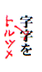
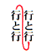
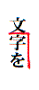

●底本などの元原稿と入力データを比較対照しながら間違いを探していく作業を、「校正」と呼びます。
●青空文庫では、ファイル作成時の誤りをできるだけ減らすために、入力者とは別の人に校正してもらってから、作品を公開しています。
入力はすんでいるのに、校正してくれる人がいないために、長期間埋もれている作品が、たくさんあります。校正へのご協力をお願いします。
■校正という作業
●校正は、底本通りにデータが入力されているか、チェックする作業です。（底本の表記が疑わしいときは、その吟味と対処も行います。）作業にあたって尊重しなければならないのは、「文章」ではなく「文字」。ふつうに本を読むときとは違って「読書の楽しみ」は捨て、「文字面だけを追う」のが基本です。
【校正作業の流れ】
●「作業着手連絡システム」の「校正受付システム」を使って、取り組む作品を選び、申し込みを行ってください。
●校正担当作品の総数は、100以下に抑えてください。
●校正の際、参照する底本は、できるだけご自身で用意してください。
●校正用底本には、できるだけ入力用底本と同じ版のもの、もしくはより版を重ねたものを選んでください。
●申し込みのあった作品のファイルを、お送りします。
●プリントアウトを用いて校正する際は、できるだけご自身でプリントしてください。
●底本（コピー）やプリントアウトを送ってほしい場合は、「校正受付システム」からの申し込み時に、その旨を記載してください。
●誤りの発見に加えて、青空文庫の校正作業では、ファイルの修正までお願いしています。
●お送りしたファイルを、校正結果にもとづいて直してください。
加えて、「どこをどう直したか」を示す作業履歴ファイルを、別に作ってください。作業履歴の形式は特に定めません。以下のように、何をどう直したかがリストアップされていれば、それで結構です。
「鳴呼」と声が漏れた。 → 「嗚呼」と声が漏れた。 【鳴】
意昧のない抵抗を → 意味のない抵抗を 【昧】
●修正前のファイルを、コピーして保存しておくと、作業履歴作成時に役立ちます。
●修正前と修正後のファイルを比較し、異なった点を抜き出して表示する「修正履歴作成ツール」を使えば、簡単に、わかりやすい作業履歴ファイルを作れます。
●ファイルの直しが終わったら、圧縮をかけた修正済みファイルと作業履歴ファイルを、reception@aozora.gr.jp宛に送ってください。
短い作品で、修正点がなかったときも、その旨を電子メール本文なり、作業履歴ファイルなりに書いてください。
●底本（コピー）とプリントアウトの供給を受けた場合は、指定された宛先に、一式を送り返してください。
【原稿尊重が基本】
●校正は「原稿（底本）尊重」が基本です。
ただし、底本も印刷物ですからそれ自体に誤植や間違いが含まれている可能性があります。「これは底本自体の間違いではないか」と思われるものについては、その箇所を訂正した上で、改めたことを、次の書式で注記してください。
［＃「……」は底本では「…」］
●訂正注記は、文節単位で行ってください。
たとえば、「紋附」と思われるところが「絞附」となっている
モーニングだとか絞附だとか
を訂正する際は、
モーニングだとか紋附だとか［＃「紋附だとか」は底本では「絞附だとか」］
としてください。
●ルビを訂正する際は、ルビ記号の直後に、次のように注記してください。
私は籠《ざる》［＃ルビの「ざる」は底本では「さる」］をさげ
●底本の表記が疑わしいけれど、正しい形を特定できない場合は、「ママ」を用いて、次のように書いてください。
広場へに［＃「広場へに」はママ］店でもだそう。
訂正注記とママ注記の詳細は、「注記一覧」の「訂正と「ママ」」を参照してください。
【校正用ツールの利用】
●青空文庫では使わない機種異存文字が混じっていないか、「チェッカー君」で確認できます。半角括弧や半角スペースなども、これでチェック可能です。
校正用ファイルはかならず、チェッカー君を通してください。
●旧字のファイルに紛れ込んだ、新字や俗字を、「校閲君」でチェックできます。
旧字作品はかならず、校閲君を通してください。
「校閲君」が置き換え候補を示したら、その字が底本でどうなっているか、確認してください。
底本の字がファイル通りであれば、そのままにしてください。異なっていれば、ファイルの字を底本通りに修正してください。
「校閲君」の詳しい使い方は、「旧字ファイルの新字・俗字を、校閲君で洗い出そう！」で説明しています。
●青空文庫で使えない文字は、外字注記で入力します。外字注記の詳細は、「注記一覧」の「外字」を参照してください。
どの文字を、どう外字注記するかは、このページからダウンロードできる「外字注記辞書」に網羅されています。
あらかじめ「外字注記辞書」を引き落とした上で、校正に取りかかってください。
【校正は繰り返し行う】
●校正は、次のような異なったやり方で、必ず繰り返し行ってください。手法を変え、何度も行ってはじめて、校正の精度は高まります。（ここでは、ファイルをプリントする場合を想定して、手順を示します。）
１）原稿つきあわせ＝原稿（底本）とプリントとを１字１句比較しながら誤りをみつけ、修正内容を記入していきます。
２）素読み＝校正が済んだプリントを通し読みします。誤字脱字などの疑問が出た場合は、底本を参照して確認します。
３）特定の観点からの素読み＝見出しの付け方に不揃いはないか、人名の表記に不揃いはないかなど、特定の観点からもう一度素読みします。特に、OCR入力をしたファイルの場合、「タ（片仮名）」と「夕（漢字）」などよく似た文字の読みとりミスが生じるので、特定の文字のチェックが必要です。
●特定の文字のチェックは、エディタやワープロの検索機能を使って行うと、便利です。
誤りは、同じパターンで何度も生じがちです。繰り返しの可能性を感じたら、検索で確認してください。
通常の検索でも校正の効率と精度を高められますが、正規表現という、文字列のパターンを表したり、チェックしたい複数の文字をまとめて指定する技法を用いれば、いっそう効果が上がります。
●OCR入力では、平仮名の「へぺべ」と片仮名の「ヘペベ」がしばしば入れ替わりますが、画面やプリントアウトの校正では、この誤りをみつけることは困難です。
けれど、正規表現に対応したエディタを使えば、半角の「[]」で片仮名の「ヘペベ」を囲った
[ヘペベ]
を検索語にして、片仮名の「ヘ」「ペ」「ベ」を、まとめてチェックできます。
●正規表現では、通常とは異なり、「[ ]」で挟まれた一つ一つの文字すべてが検索対象として指定されます。
「[青空文庫]」で正規表現の検索を行うと、「青空文庫」という連続した四文字ではなく、「青」「空」「文」「庫」のそれぞれが拾われます。
見つけ出したい文字列のパターンをどう表現するかといった正規表現の詳細は、解説本やインターネットの記述を参考にしてください。対応するエディタについては、インターネットで調べてください。
●点検グループで用いている正規表現を、参考までにリストアップしておきます。
青空文庫の校正を進める上で、これらが何をあらわしているかを理解する必要はありません。ただ、簡単なものからでも試してもらえれば、作業の効率と精度をあげるのに役立つはずです。
▼片仮名ヘペベをチェックする。
[ヘペベ]
▼平仮名へぺべをチェックする。（多数ヒットしすぎてチェックしづらいときは、次項の正規表現で、誤って入った平仮名へぺべをチェックしてください。）
[へぺべ]
▼片仮名文字列に接する平仮名へぺべをみて、読み取り誤りをチェックする。
[ァ-ヶー][へぺべ]
[へぺべ][ァ-ヶー]
▼片仮名文字列でない中に、一字混じった片仮名をチェックする。
[^ァ-ヶー][ロエセカニタトリハオ][^ァ-ヶー]
▼片仮名文字列の中に、一字混じった片仮名ではない文字をチェックする。
[ァ-ヶー]+[口工七力二夕卜り一八才][ァ-ヶー]
▼新字ファイルに混じる旧字をチェックする。
[亞惡壓圍爲醫壹稻飮隱營榮衞驛圓艷鹽奧應歐毆穩假價畫會壞懷繪擴殼覺學嶽樂勸卷歡罐觀關陷巖顏歸氣龜僞戲犧舊據擧峽挾狹堯曉區驅勳徑惠溪經繼莖螢輕鷄藝缺儉劍圈檢權獻縣險顯驗嚴效廣恆鑛號國濟碎齋劑櫻册雜參慘棧蠶贊殘絲齒兒辭濕實舍寫釋壽收從澁獸縱肅處敍奬將燒稱證乘剩壤孃條淨疊穰讓釀囑觸寢愼晉眞盡圖粹醉隨髓數樞聲靜齊攝竊專戰淺潛纖踐錢禪雙壯搜插爭總聰莊裝騷臟藏屬續墮體對帶滯臺瀧擇澤單擔膽團彈斷癡遲晝蟲鑄廳聽敕鎭遞鐵轉點傳黨盜燈當鬪獨讀屆繩貳惱腦霸廢拜賣麥發髮拔蠻祕濱拂佛竝變邊辨辯瓣舖穗寶襃豐沒飜槇萬滿默彌藥譯豫餘與譽搖樣謠遙來亂覽龍兩獵壘勵禮靈齡戀爐勞樓祿亙灣瑤]
▼旧字ファイルに混じる新字をチェックする。
[亜悪圧囲為医壱稲飲隠営栄衛駅円艶塩奥応欧殴穏仮価画会壊懐絵拡殻覚学岳楽勧巻歓缶観関陥巌顔帰気亀偽戯犠旧拠挙峡挟狭尭暁区駆勲径恵渓経継茎蛍軽鶏芸欠倹剣圏検権献県険顕験厳効広恒鉱号国済砕斎剤桜冊雑参惨桟蚕賛残糸歯児辞湿実舎写釈寿収従渋獣縦粛処叙奨将焼称証乗剰壌嬢条浄畳穣譲醸嘱触寝慎晋真尽図粋酔随髄数枢声静斉摂窃専戦浅潜繊践銭禅双壮捜挿争総聡荘装騒臓蔵属続堕体対帯滞台滝択沢単担胆団弾断痴遅昼虫鋳庁聴勅鎮逓鉄転点伝党盗灯当闘独読届縄弐悩脳覇廃拝売麦発髪抜蛮秘浜払仏並変辺弁弁弁舗穂宝褒豊没翻槙万満黙弥薬訳予余与誉揺様謡遥来乱覧竜両猟塁励礼霊齢恋炉労楼禄亘湾瑶]
▼仮名を小書きしないファイルに紛れ込んだ、小書きをチェックする。（物を数える際や地名などに用いる「ヶ」は、外してあります。）
[ぁぃぅぇぉっゃゅょゎァィゥェォッャュョヮヵ]
▼全角とするべき可能性の高い、一文字の半角アルファベットをチェックする。
[^a-zA-Z][a-zA-Z][^a-zA-Z]
▼半角の「.」の後に、半角のアキ（「 」）なしで文字が続くものをチェックする。
\.([^ （）p」])
▼文末に、不要な空白（全角、半角）が入っていないかをチェックする。
[ ]+$
▼空白もしくは括弧以外が文頭にきているものをみて、誤って入れられた改行をチェックする。（底本の行あきをなぞるために入れた改行も、チェックされます。）
^[^ 「［（『]
▼行頭の括弧の前に、青空文庫では入れないことにしている空白がないかをチェックする。
^ [（「『]
▼ルビの中に、仮名以外がないかをチェックする。
《[^《》]*?[^あ-んァ-ヶーゞゝヽヾ・／″＼][^《》]*?》
▼ルビの文字数に対して、ルビの付く側の文字数が長めのものをみて、「｜」の入れ忘れをチェックする。
[\x{3400}-\x{9fff}\x{f900}-\x{fa2d}々]{3,}《
▼ルビの付く文字が連続するものをみて、過分割をチェックする。
《[^》]+》[^ァ-ヶーあ-ん、。？！―,『』｜「」々]+《[^》]+》
▼ルビ中の拗促音が小書きされていないものをチェックする。（正しく並みで使われているものもチェックされます。）
《[^《》]*?[つやゆよヤヨツユ][^《》]*?》
▼誤入力の可能性の高い、半角の丸括弧「()」と角括弧「[]」をチェックする。
[^U][\?\!\#-\&\(-\+\<-\>\[-\]|]
▼使われることのまれな文字をチェックする。
[′．･，‥−｢♯□｣､]
▼OCRの読み取りミスや誤入力が生じやすい文字をチェックする。（以下で用いられている「|」は、検索語の区切りです。全体をコピーし、検索ウインドウにペーストします。ヒットしたものに誤りの可能性を感じたら、底本を確認してください。）
米殻|奴隸|釆女|喝釆|壷|壼|会杜|溌刺|撒去|撤布|慰籍|狼籍|酒落|曖味|瞹昧|瞹味|咋日|[気天]侯|王候|鍛治屋|掃って|帰く|因難|粛条|芸著|建薬物|表規|絵仕|猟人形|緒口|野緒|熊々|煮趣|粗の|基だ|挟まれる|立流|繁う|愚かれた|遂われる|借しく|料埋|士地|紳土|弁護土|揚所|抜露|披る|披璃|緑結び|熱柿|探夜|族行|丁推|連蜂|藤椅子|間題|振柚|限鏡|博突|乾焼|春く|海昔|撤[かきくけこ]|茄[だで]|吐潟|裟婆|呷[かきくけこ]|崇[らりるれろ]|且那|梶棒|灰暗い|瑞ぐ|沢庵潰|、辷|咄嵯|相母|きれいだた|失わたい|すまたい|状能|卯何|実似|別在|駑いた|広緑|任掛|族客|迫ひ|荼|陀俤|笶|失はり|失張|迫掛け|誥|仲聞|出違|歳の幕|警傭|対時|意気軒昴|薪手|口借し|遠反|閣魔|趣昧|貴任|崇《たた》|崇《たたり》|紆介|理寮|代日|丁日|大統頷|愛橋|天主闇|埋窟|埋屈|要頷|一骰|輿行|夕碁|哂|肓|遺《や》|柤|聨|惨澹|高梁|衿持|千渉|大低|束京|咋今|咋秋|孟蘭盆|昼問|影讐|神泌|象微|徴動|欺《か》く|遺る|軋礫|粟鼠|驕桿|戦々競々|鉄葉|愛矯|覩察|遣遥|兼葭|堂字|鄭接|天鉄羅|霊揚|奢移|お皺|清洲国|横械|横会|記情|面も|両も|兄い|年棒|逐に|吾響|件[はひふへほ]|大きた|瞬問|塞さに|タ陽|娼帰|一入|日く|精桿|沓《よう》として|沓として|沓渺|沓茫|※［＃小書き平仮名わ|一杖|欺き|夫嫁|憤れ|眠が|悴|報く|別投|絞い|普投|灯寵|韜晦|俳譜|嘲る|擬と|例巧|疳癪|倦も|咳私|一過間|逮廻し|時聞|風間|教本|二と|覚東|衛道|姻突|後喬|共処|鱧|夏に|おるす|摘ん|駁諭|弩窿|追億|読計|臓腋|冒演|冒漬|乾操|出鱈日|移しい|灰燈|散術|限石|塵挨|夫死|髪髴|距雌|七首|任様|棒給|前蝕|タメ急|看護嫁|暮口|績り|備われ|[^相]違[さしすせそ]|達[わいうえ]|覚倍|両《しか》|判延|遠いあ|探[いくけき]|幕史|無隈|端侃|依沽地|摩《なび》|旅騎兵|蕉村|なちば|冩《うつ》|外冠|追る|摩詞不思議|愚かれ|膝顕|什《たお》れ|幕史|廷喜|於で|視神|蝦蝮|実李|鳴咽|──|凡帳面|鐡道|訊間|兔状|艮|末練|一暼|錬倉|郡屋|指輸|手祈|事惰|落書き|亊|擧[校生]|桑かい|嗚[っつ]た|反封|膀手|俤間|伺うし|金昆羅|喇叺|取倣|剌[さしすせそ]|世事|、、|。。|。、|、。|！、|[氣気]特|夾|[反訪]間|此虞|画し|竸|末だ|眥|鳴呼|叮噂|柳か|変た|朦瀧|杯《など》|新開|楝瓦|[へれね]ぱ|譯山|衿り|活撥|[まで]しよう|間達|達う|迫々|咋年|なけれは|含は|人[らりるれろ]|入間|酉洋|相達|あさらか|方画|那蘇|字音|項戴|食掌|肯像|潜越|黙心|畢竜|停立|比際|洒が|任所|木當|亭圭|浩身|母現|牀|速れ|缺鮎|傅説|[畫書]飯|[畫書]食|淡自|目分|白分|白己|感清|人地|差ず|隣れ|評到|宥《よ[いひ]》|都曾|周園|王義|卑狸|減多|腸[っつわるり]|卿筒|有舞う|木当|入家|ようた|かたり|いろいろた|静かた|勿諭|撤《ま》|一且|の問で|侯補|曖簾|[曖瞹]か|一ばい|茸|踉《つ》|真申|丸大|暖炉|燈龍|灯龍|大尺|アメリ力|宜伝|心待ちがい|等[いむまみめ]|伊大利|等敬|欺息|共時|弟一|寵[っるもられりろ]|児る|混度|漸う|巳《や》|代去|灰白い|几て|止当|瓢々|練返|徂合|酪酊|酩酎|酪酎|緑家|凛|埓|出偶|けれは|ならは|すれは|贔屑|脾睨|縞麗|逹|迴|完壁|下句|白身|眺躍
●標準的には、「原稿つきあわせ」二度、「素読み」一度に加え、「特定の観点からの素読み」を目安としてください。
【完了後は１日寝かす】
●集中力には限りがあります。つきあわせ→素読み→特定の観点からの素読みを連続して行うと、かえって見落としが増える場合があります。校正が済んだら、最低でも一晩寝かし、翌日最後のチェックを行いましょう。思わぬ発見があるはずです。
◆主な校正記号
|
 |
文字を削除して詰めるときは「トルツメ」と記入。削除してあとをそのまま空けるときは「トルアキ」。 |
 |
行の特定の部分から前を前行に送る。 |
 |
間違った修正を取り消し、原文のままにするときは、記入した赤字を消して「イキ（モトイキ）」。 |
 |
改行する。 |
 |
新たに語句を挿入するときに用いる。 |
 |
字と字、行と行を入れ替える。 |
 |
平仮名や片仮名を拗促音に変更。 |
 |
あとの行を前に送って前行とつなげる。 |
 |
拗促音文字を普通の文字に変更。 |
 |
指定の位置まで文字を移動。引っ込める記号と位置指定の記号を併用。 |
|
 |
行の特定の部分からあとを次行に送る。 |
 |
□は１字空きにするとき、＞は空きを詰めるときに。位置指定記号を併用。 |
◆「加工」へ｜◆作業マニュアル目次へ